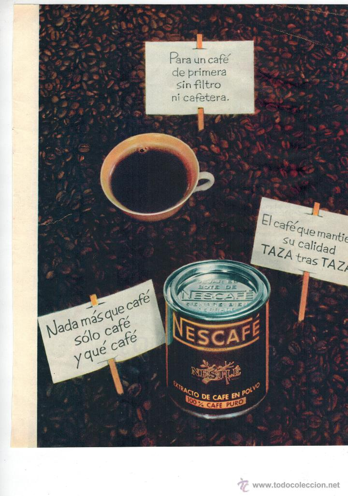

Nescafe
El origen de la marca de Nescafé proviene de la propia compañía de Nestlé, y nació sobre el 1938. Se trata principalmente de una marca de café orientada al café instantáneo.
Aunque de entrada el instantáneo se suele asociar a café de mala calidad, hay que decir que los Nescafé conservan una calidad más que aceptable, y además, cuentan con una amplia gama de tipos de café distintos que suplen con creces la diferencia de calidad entre el instantáneo y el café común. Es evidente, que si eres un apasionado del buen café, probablemente esta marca se te quede corta, pero para el resto de personas, que necesitan un café por la mañana para despertarse, es una opción validísima.
Algunas de las variedades de las que disponen son:
- Clásico
- Vitalissimo
- Cappuccino
- Classic creme
- Gold natural
- Puro Colombia
- Nescafé Dolce Gusto